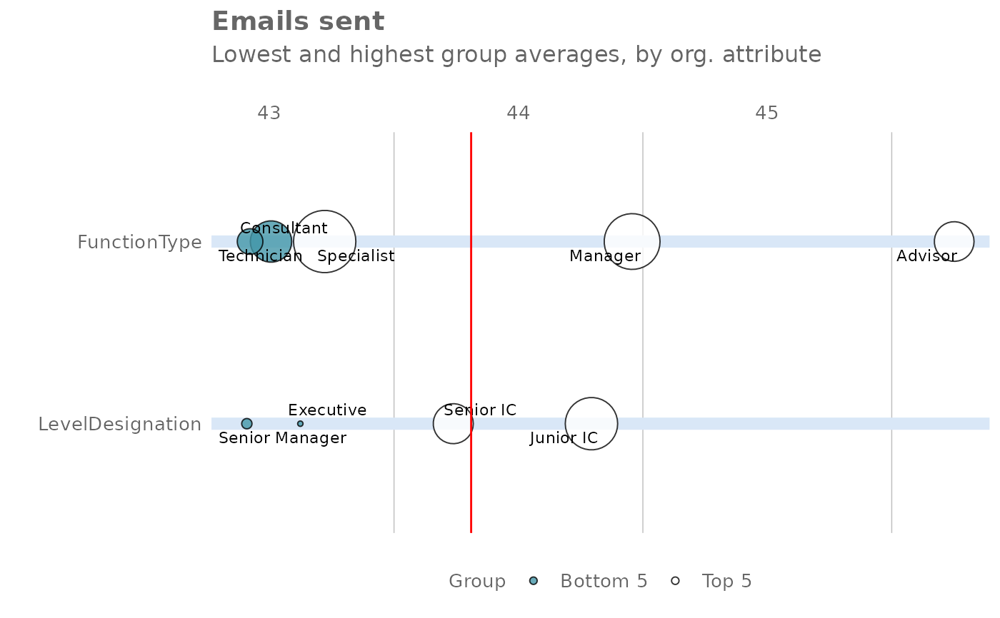
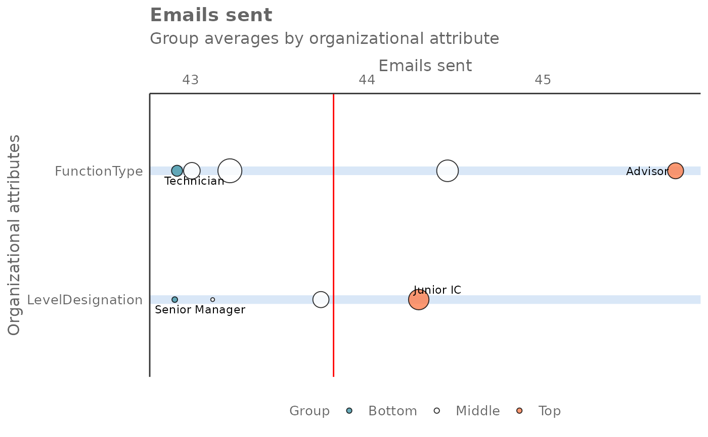

Rank all groups across HR attributes on a selected Viva Insights metric
create_rank.RdThis function scans a standard Person query output for groups with high levels of a given Viva Insights Metric. Returns a plot by default, with an option to return a table with all groups (across multiple HR attributes) ranked by the specified metric.
Usage
create_rank(
data,
metric,
hrvar = extract_hr(data, exclude_constants = TRUE),
mingroup = 5,
return = "table",
mode = "simple",
plot_mode = 1
)Arguments
- data
A Standard Person Query dataset in the form of a data frame.
- metric
Character string containing the name of the metric, e.g. "Collaboration_hours"
- hrvar
String containing the name of the HR Variable by which to split metrics. Defaults to
"Organization". To run the analysis on the total instead of splitting by an HR attribute, supplyNULL(without quotes).- mingroup
Numeric value setting the privacy threshold / minimum group size. Defaults to 5.
- return
String specifying what to return. This must be one of the following strings:
"plot"(default)"table"
See
Valuefor more information.- mode
String to specify calculation mode. Must be either:
"simple""combine"
- plot_mode
Numeric vector to determine which plot mode to return. Must be either
1or2, and is only used whenreturn = "plot".1: Top and bottom five groups across the data population are highlighted2: Top and bottom groups per organizational attribute are highlighted
Value
A different output is returned depending on the value passed to the return
argument:
"plot": 'ggplot' object. A bubble plot where the x-axis represents the metric, the y-axis represents the HR attributes, and the size of the bubbles represent the size of the organizations. Note that there is no plot output ifmodeis set to"combine"."table": data frame. A summary table for the metric.
See also
Other Visualization:
afterhours_summary(),
collaboration_sum(),
create_bar_asis(),
create_bar(),
create_boxplot(),
create_bubble(),
create_dist(),
create_fizz(),
create_inc(),
create_line_asis(),
create_line(),
create_period_scatter(),
create_scatter(),
create_stacked(),
create_tracking(),
create_trend(),
email_summary(),
hrvar_count(),
meeting_summary()
Other Flexible:
create_bar_asis(),
create_bar(),
create_boxplot(),
create_bubble(),
create_density(),
create_dist(),
create_fizz(),
create_hist(),
create_inc(),
create_line_asis(),
create_line(),
create_period_scatter(),
create_scatter(),
create_stacked(),
create_tracking(),
create_trend()
Examples
pq_data_small <- dplyr::slice_sample(pq_data, prop = 0.1)
# Plot mode 1 - show top and bottom five groups
create_rank(
data = pq_data_small,
hrvar = c("FunctionType", "LevelDesignation"),
metric = "Emails_sent",
return = "plot",
plot_mode = 1
)

# Plot mode 2 - show top and bottom groups per HR variable
create_rank(
data = pq_data_small,
hrvar = c("FunctionType", "LevelDesignation"),
metric = "Emails_sent",
return = "plot",
plot_mode = 2
)

# Return a table
create_rank(
data = pq_data_small,
metric = "Emails_sent",
return = "table"
)
#> # A tibble: 20 × 4
#> hrvar group Emails_sent n
#> <chr> <chr> <dbl> <int>
#> 1 SupervisorIndicator Manager+ 101. 35
#> 2 LevelDesignation Director 97.9 31
#> 3 LevelDesignation Manager 62.9 61
#> 4 SupervisorIndicator Manager 62.9 61
#> 5 FunctionType Sales 56.3 58
#> 6 FunctionType Marketing 52.2 66
#> 7 FunctionType Analytics 48.5 61
#> 8 Organization Finance 47.7 132
#> 9 Organization Sales and Marketing 45.1 128
#> 10 Organization HR 44.0 132
#> 11 FunctionType Engineering 43.5 83
#> 12 FunctionType Customer_Service 43.5 59
#> 13 Organization Product 41.8 127
#> 14 FunctionType IT 38.9 89
#> 15 LevelDesignation Junior IC 38.5 53
#> 16 FunctionType R_and_D 38.3 71
#> 17 LevelDesignation Senior IC 38.1 88
#> 18 FunctionType G_and_A 38.1 33
#> 19 SupervisorIndicator Individual Contributor 37.6 424
#> 20 LevelDesignation Support 37.2 283
# \donttest{
# Return a table - combination mode
create_rank(
data = pq_data_small,
metric = "Emails_sent",
mode = "combine",
return = "table"
)
#> # A tibble: 222 × 4
#> hrvar group Email…¹ n
#> <chr> <chr> <dbl> <int>
#> 1 Combined [LevelDesignation] Director [SupervisorIndicator] Man… 97.9 31
#> 2 Combined [LevelDesignation] Manager [SupervisorIndicator] Mana… 62.9 61
#> 3 Combined [LevelDesignation] Junior IC [SupervisorIndicator] In… 38.5 53
#> 4 Combined [LevelDesignation] Senior IC [SupervisorIndicator] In… 38.1 88
#> 5 Combined [LevelDesignation] Support [SupervisorIndicator] Indi… 37.2 283
#> 6 Combined [LevelDesignation] Director [Organization] Finance 108. 8
#> 7 Combined [LevelDesignation] Director [Organization] HR 99.7 8
#> 8 Combined [LevelDesignation] Director [Organization] Product 92.5 7
#> 9 Combined [LevelDesignation] Director [Organization] Sales and … 90.9 8
#> 10 Combined [LevelDesignation] Manager [Organization] Sales and M… 66.0 15
#> # … with 212 more rows, and abbreviated variable name ¹Emails_sent
# }